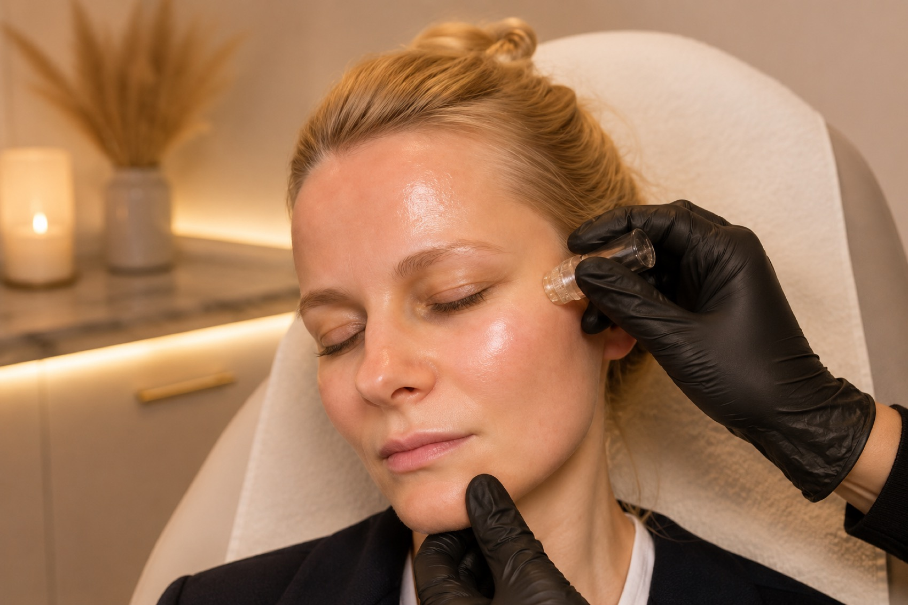

Bio-Microneedling
Smoother, brighter, refreshed skin.
A gentle spicule facial that uses microscopic natural spicules — not metal needles — to stimulate your skin's own renewal, refining texture, softening pores and restoring a healthy glow. In Leyton, East London.
Not sure if it's right for you? Message us on WhatsApp — we'll happily answer your questions, no pressure.
Performed by a trained, insured practitioner · Leyton, East London
Looking in the mirror and noticing…
- Rough or uneven texture
- Enlarged, visible pores
- Dullness — a "tired", lacklustre look
- Fine lines starting to show
- Mild acne scarring or uneven tone
You don't necessarily need anything drastic or intimidating. Sometimes skin simply needs a nudge to renew itself — to smooth away rough surface texture and reveal fresher, brighter, more even skin.
Bio-microneedling is a gentle spicule therapy that encourages exactly that. Using microscopic natural spicules — massaged into the skin rather than pierced in with a device — it stimulates your skin's own repair and renewal process, so you can improve texture and glow without metal needles.
What is bio-microneedling?
Bio-microneedling — also called spicule therapy, liquid microneedling or simply bio-microneedling — is a skin-renewal treatment that works without metal needles or a mechanical device.
Instead, it uses microscopic natural spicules: tiny, needle-like structures typically derived from freshwater sponges or marine organisms. These spicules are massaged into the skin, creating microscopic stimulation that gently triggers the skin's natural repair and renewal process.
Unlike traditional microneedling, no needles penetrate the skin with a device. The spicules simply lodge in the outer layers of the skin as they're worked in, prompting a controlled renewal response — which is why many people find bio-microneedling a less intimidating way to improve their skin's texture and glow.
How the treatment works
Your treatment is straightforward, and we'll talk you through each step as we go:
1 · Cleanse
Your skin is thoroughly cleansed to prepare the surface.
2 · Apply
A spicule-containing serum or powder is gently massaged into the skin.
3 · Stimulate
The spicules temporarily lodge in the outer layers of the skin, creating a mild prickling sensation as they stimulate renewal.
4 · Renew
Over the next 24–72 hours the spicules naturally shed as your skin renews itself.
Depending on your skin, some treatments also finish with soothing serums, growth factors, peptides or hyaluronic acid to comfort and nourish the skin as it renews.
What it helps with
Bio-microneedling is a versatile "texture and glow" treatment. Depending on your skin and the formulation used, it can help with:
- Skin texture & roughness
- Mild acne scars
- The look of enlarged pores
- Fine lines
- Uneven pigmentation
- A dull complexion
- Mild acne (depending on the formulation)
Because there are no mechanical needles, many people find bio-microneedling a less intimidating option than traditional needling — while still working with the skin's natural renewal.
What does it feel like?
During the treatment, you'll usually feel a prickly or tingling sensation as the product is massaged in. Any mild discomfort typically lasts around 10–20 minutes, and we keep you comfortable throughout.
For the next 1–3 days, it's normal for the skin to feel:
- Rough or "sandy" to the touch
- Sensitive when touched
- Mildly itchy or tight
This is a normal part of how the treatment renews your skin — it settles as the spicules shed and fresh skin comes through.
Recovery — what to expect
Downtime is usually mild. Here's a typical timeline, though everyone's skin is a little different:
Day 1
Redness and a prickling sensation, similar to a mild warmth on the skin.
Days 2–3
Dryness and slight peeling may occur as the spicules shed and the skin renews.
Days 3–7
Skin typically appears smoother and brighter as fresh skin comes through.
Many people resume normal activities the same day, though makeup is often avoided for the first 24 hours to let the skin settle.
Aftercare
Looking after your skin well helps you get the best, most comfortable result. We'll give you personalised advice, but as a general guide:
- Use a gentle cleanser
- Apply a fragrance-free moisturiser
- Wear a broad-spectrum SPF 30+ every day
- Avoid exfoliating acids, retinoids and scrubs for several days
- Avoid excessive heat, saunas and swimming for 24–48 hours if advised
Daily sun protection is especially important while your skin is renewing, to help avoid uneven pigmentation.
How many treatments will I need?
Bio-microneedling works best as a short course, allowing the skin to renew gradually over time.
A typical plan
- A common course is 3–6 treatments
- Spaced about 2–4 weeks apart
- Maintenance every few months, depending on the concern
Wondering if it's right for you?
That's exactly what a consultation is for — a relaxed, no-obligation chat where we assess your skin, talk through your goals, and give you honest advice on whether bio-microneedling suits you. There's never any pressure to go ahead.
Prefer to ask first? Message us on WhatsApp ›
Realistic expectations & the evidence
We believe in giving you honest, straightforward advice — so here's the balanced picture.
Bio-microneedling is a relatively newer approach. Early studies and clinical experience suggest it can improve texture, radiance and mild acne or pigmentation, and many people are very happy with their results. However, the evidence base for spicule therapy is currently smaller and less standardised than it is for traditional microneedling.
For deeper acne scars or significant wrinkles, conventional microneedling generally has stronger supporting research. If that's your main concern, we'll say so honestly and may recommend a different route.
How it compares with traditional microneedling
Both treatments work with your skin's natural renewal, but they go about it differently. Here's an honest side-by-side:
Bio-microneedling
- Uses microscopic natural spicules
- Little-to-no bleeding
- Mild downtime
- Great for texture & glow
- Newer, less robust evidence
Traditional microneedling
- Uses sterile metal needles
- Possible pinpoint bleeding
- Mild-to-moderate downtime
- Stronger evidence for acne scars & collagen remodelling
At your consultation, we'll honestly advise which of the two suits your skin, your concerns and your comfort level best.
Risks & side effects
Bio-microneedling is generally well tolerated, but every skin treatment carries some risk. We explain everything fully at your consultation.
Common & temporary
- Redness
- Dryness
- Temporary sensitivity
- Mild peeling
Less common
- Skin irritation
- Post-inflammatory hyperpigmentation (darkening), especially if aftercare or sun protection is inadequate
- Infection — though the risk is generally lower than with traditional microneedling, as there are no reusable needles breaking the skin in the same way
Sun protection matters
Because your skin is renewing, uneven pigmentation is possible if it isn't protected. Daily broad-spectrum SPF and following your aftercare closely are the best ways to keep your skin even and comfortable while it recovers.When it should be avoided
For your safety, bio-microneedling may not be suitable, or we may postpone it, if you:
- Have an active skin infection or breakout in the area
- Have very sensitive skin or a compromised skin barrier
- Are pregnant or breastfeeding, where our protocol advises caution
- Have a known allergy to any ingredient in the formulation
A consultation and patch considerations determine suitability. If bio-microneedling isn't right for you, we'll tell you honestly and suggest a better-suited option.
Alternatives
Bio-microneedling isn't the only way to improve skin quality. Depending on your skin and goals, alternatives include:
- Traditional microneedling
- Skin boosters
- A good medical-grade skincare routine with daily SPF
- No treatment at all
We'll always give you honest advice about which option best suits your skin — including if another treatment, or none at all, would serve you better.
What our clients say
"I loved that there were no scary needles. Husna explained exactly what to expect and my skin felt a bit rough for a couple of days, then came through so smooth and glowy. My pores look so much more refined."
"Over my course my texture has genuinely improved — my skin is brighter and so much smoother. I felt looked after the whole way through and the aftercare advice was really clear."
Reviews shown are genuine client feedback from Layali Clinic patients. Individual results vary and a consultation is required to determine suitability.
Pricing
Not ready to book? Ask us anything on WhatsApp ›
Frequently asked questions
Does it hurt?
Most people describe a prickly or tingling sensation as the product is massaged in, with any mild discomfort usually lasting around 10–20 minutes. For the next 1–3 days the skin can feel a little rough or "sandy", sensitive to touch and mildly tight, which settles as the skin renews.
Is it the same as traditional microneedling — does it use needles?
No. Traditional microneedling uses sterile metal needles on a device to physically pierce the skin. Bio-microneedling uses microscopic natural spicules — tiny needle-like structures typically derived from freshwater sponges or marine organisms — that are massaged into the skin. There's no mechanical device and no metal needles, which many people find far less intimidating.
How many sessions will I need and how far apart?
A common course is around 3–6 treatments spaced roughly 2–4 weeks apart, with maintenance every few months depending on your concern. Your exact plan is tailored to your skin at your consultation.
How much downtime is there?
Downtime is usually mild. Expect redness and a prickly feeling on day one, possible dryness and slight peeling on days 2–3, and smoother, brighter-looking skin by days 3–7. Many people carry on as normal the same day, though makeup is often avoided for the first 24 hours.
What can it help with?
It can help with skin texture and roughness, the look of enlarged pores, fine lines, mild acne scarring, uneven pigmentation, a dull complexion and — depending on the formulation — mild acne.
Is there any evidence it works?
Bio-microneedling is a relatively newer approach. Early studies and clinical experience suggest it can improve texture, radiance and mild acne or pigmentation, but the evidence base is smaller and less standardised than for traditional microneedling. For deeper acne scars or significant wrinkles, conventional microneedling generally has stronger supporting research. We'll always be honest about what it can and can't do, and results vary and can't be guaranteed.
Who isn't suitable?
It may not be suitable if you have an active skin infection or breakout in the area, very sensitive or a compromised skin barrier, are pregnant or breastfeeding where our protocol advises caution, or have a known allergy to any ingredient in the formulation. A consultation and patch considerations determine suitability.
How much does it cost?
Price is confirmed at your consultation (£POA), once we've assessed your skin and agreed the right number of sessions for your goals. A deposit secures your appointment and is deducted from the treatment.
How do I know if it's right for me?
The easiest way is a quick, no-obligation consultation. We'll assess your skin and honestly tell you whether bio-microneedling suits you — or if traditional microneedling, skin boosters, good medical skincare or no treatment at all would serve you better.
Ready for smoother, brighter skin?
Book a relaxed, no-obligation consultation — we'll assess your skin, explain bio-microneedling honestly and create a personalised plan. You're never under any pressure to proceed.
Or simply message us on WhatsApp — we'd love to help you decide.
Layali Clinic · Leyton, East London · 07787 708200
Layali Clinic · 442 Lea Bridge Road, Leyton, E10 7DY · 07787 708200 · layaliclinic@gmail.com · Privacy Notice